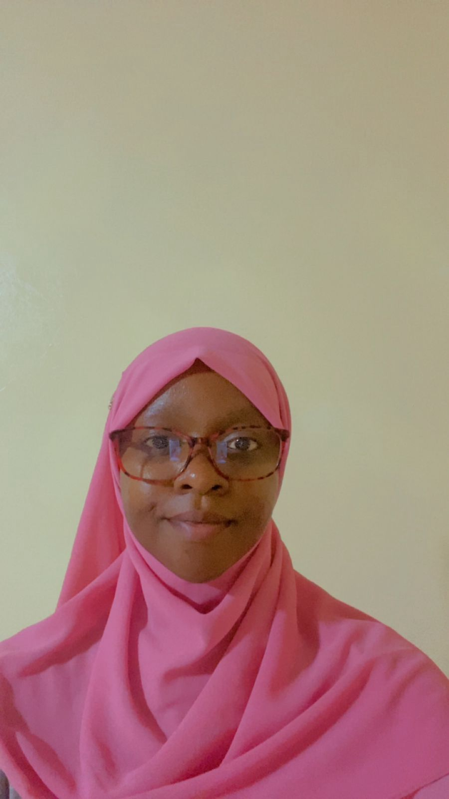

Graphic Design Portfolio
I design clear, polished posters and social media campaigns for community brands, Islamic organizations, and digital platforms. My work focuses on strong layout, readable messaging, and designs that feel trustworthy online.


Selected Work
These pieces show how I handle campaign posters, weekly social content, reminders, announcements, and faith-based visual communication.


Profile
I combine graphic design, digital marketing, customer service, and software development. My background in React.js, Python, database management, and ICT support helps me create visual work that is not only attractive, but also practical for online audiences.
Designed and deployed scalable web applications using React.js and Python, with secure API and cloud environment work before resigning in April 2026.
Improved system performance through testing, documentation, troubleshooting, and simplifying a multipage web application.
Graduated with Second Upper Class Honors, specializing in database management, web development, and programming fundamentals.
Web Projects
I built this store data management system for efficient product and record handling.
Charity Platform Noor ProjectI created this interactive platform with a focus on clean UI and community-centered presentation.
React Showcase JustGotBetter V1I developed this application to practice performance-focused React integration.
Contact